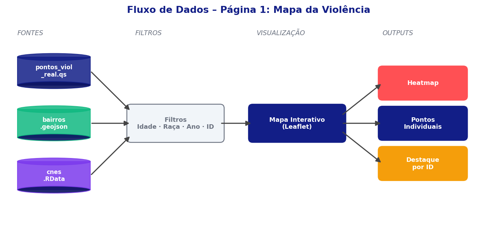
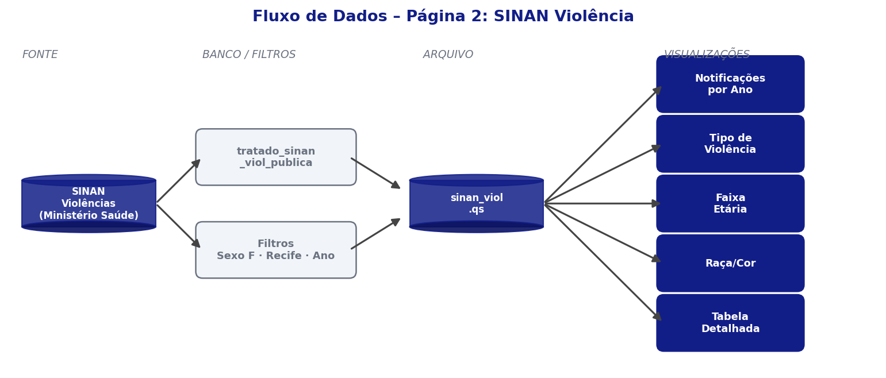
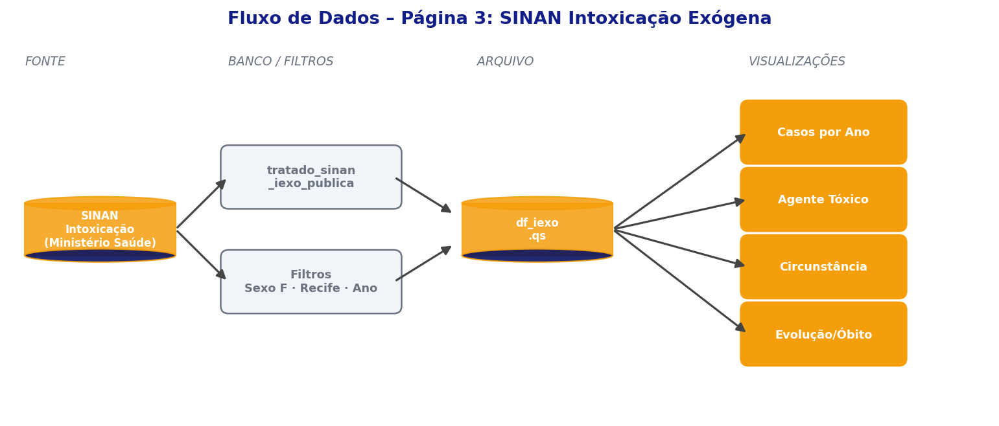
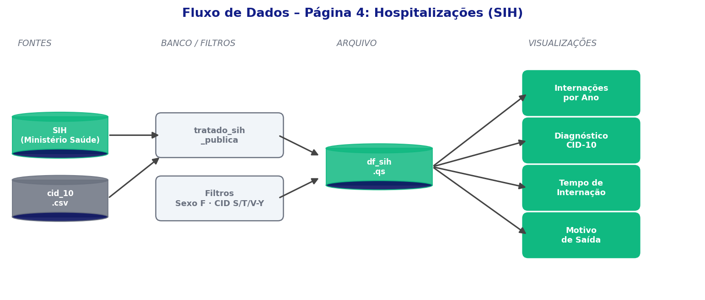
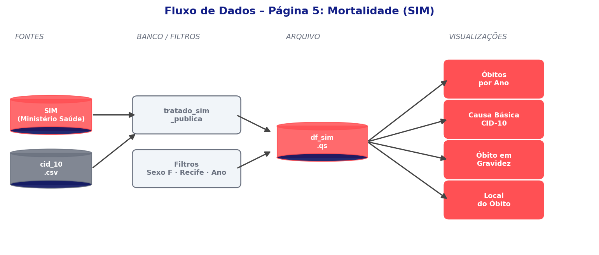
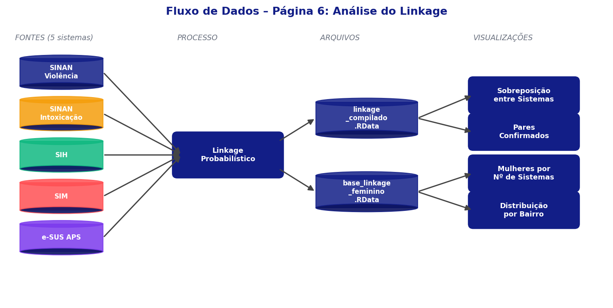
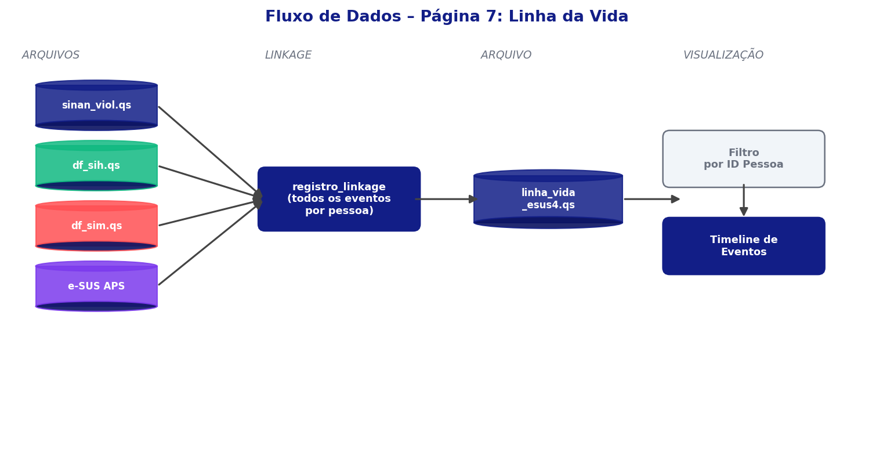
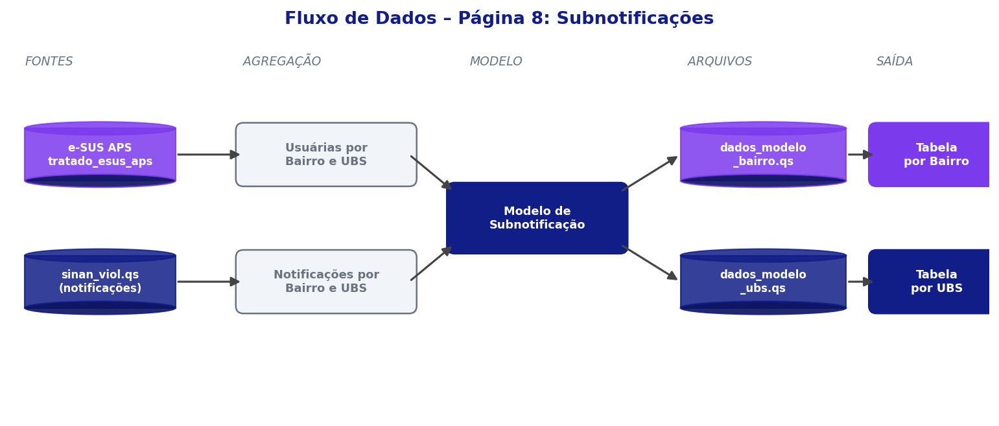

Painéis Vigilância — Recife
Este documento descreve a origem dos dados, as variáveis utilizadas, os pré-processamentos aplicados e a lógica de cada visualização em cada página do painel da Vital Strategies entregue à vigilância de Recife.
Índice de páginas
Mapa da Violência
O que é essa página?
Apresenta um mapa interativo de Recife com a localização geográfica das residências das mulheres identificadas nos registros do SINAN Violência, sobreposta aos bairros da cidade e às unidades de saúde (CNES). Permite visualizar a distribuição espacial dos casos de violência e identificar concentrações por região.
De onde vêm os dados?
- Pontos das mulheres: coordenadas geográficas com informações demográficas e trajetória nos sistemas. Originados do linkage determinístico.
- Bairros de Recife: polígonos (shapefile) dos bairros.
- Unidades de saúde: localização e nome das unidades do CNES.
Fontes dos dados
global.R e mapa_ui.R.| Coluna / Arquivo | Tabela de origem | Descrição |
|---|---|---|
| pontos_viol_real.qs | dados/pontos_viol_real.qs | Mulheres com ≥1 notificação SINAN; coordenada do endereço mais recente via linkage determinístico (SINAN Viol + SIH + SIM + e-SUS APS) |
| cnes.RData | dados/cnes.RData | Cadastro de unidades: cd_cnes_unid_not, NO_FANTASIA, latitude_cnes, longitude_cnes |
| cnes_join.RData | dados/cnes_join.RData | Join CNES ↔ id_unico: cd_cnes_unid_not, texto_final |
| bairros.geojson | dados/bairros.geojson | Polígonos dos bairros do Recife (objeto sf) |
| linha_vida_esus4.qs | dados/linha_vida_esus4.qs | Trajetória nos sistemas (df_linha_vida): texto_final e datas |
Transformações no carregamento
| Transformação | Descrição |
|---|---|
| mutate(Latitude, Longitude, ano_geo) | Converte para numeric/integer |
| left_join(cnes_join, by=id_unico) | Enriquece df_linha_vida com cd_cnes_unid_not e texto_final |
| left_join(df_linha_vida2, by=id_unico) | Adiciona trajetória e texto_final a pontos_viol |
| mutate(cd_cnes_unid_not = as.numeric(...)) | Garante tipo numérico para match com selected_cnes |
| st_read(dados/bairros.geojson) | Carrega polígonos como objeto sf |
Filtros reativos
filtro_id_pessoa não filtra linhas — apenas define highlight=TRUE na linha correspondente.| Filtro | O que faz | Input | Variável |
|---|---|---|---|
| Raça/cor | Mantém só mulheres da raça selecionada | filtro_raca | ds_raca |
| Idade | Mantém mulheres dentro da faixa de idade | filtro_idade | nu_idade_anos |
| Ano | Mantém registros do período selecionado | filtro_ano | ano_geo |
| ID Pessoa | Destaca a mulher no mapa (highlight=TRUE, não remove linhas) | filtro_id_pessoa | id_pessoa |
| CNES | Mantém só mulheres atendidas naquela unidade | selected_cnes (clique no mapa) | cd_cnes_unid_not |
Camadas do mapa
| Visualização | O que mostra | Colunas usadas | Filtros |
|---|---|---|---|
| Polígonos dos bairros | Contornos dos bairros de Recife | mapa (sf) | Nenhum |
| Marcadores CNES | Localização das unidades de saúde cadastradas no CNES | cnes | selected_cnes |
| Marcadores de pontos | Cada ponto representa uma mulher com ≥1 notificação de violência, posicionada pela coordenada do endereço mais recente | pontos_viol | Todos; destaque se highlight=TRUE |
| Mapa de calor | Concentração espacial dos casos — áreas de maior densidade, sem pontos individuais | pontos_viol | Todos; ativado por toggle_heatmap |
Diagrama de fluxo — Página 1

SINAN Violência
O que é essa página?
Apresenta análises sobre as notificações de violência doméstica, sexual e outras violências interpessoais registradas em Recife. Os dados cobrem o período de 2016 a 2025.
De onde vêm os dados?
Ficha de Violência Doméstica, Sexual e/ou Outras Violências Interpessoais. Profissionais de saúde registram obrigatoriamente casos suspeitos e confirmados. Cada linha representa uma notificação individual.
Fontes dos dados
tratado_sinan_viol_publica (PostgreSQL). Resultado salvo como sinan_viol.qs → objeto df_sinan. Filtro: sg_sexo = F.ds_nome_pac, raça/cor → ds_raca, idade em anos → nu_idade_anos. Uma tabela de correspondência é mantida por base de origem nos scripts de ETL (vital-gbv/scripts).| Coluna | Tabela de origem | Descrição |
|---|---|---|
| id_pessoa | tratado_sinan_viol_publica | Identificador único da mulher (chave de linkage) |
| nu_idade_anos | tratado_sinan_viol_publica | Idade em anos |
| ds_raca | tratado_sinan_viol_publica | Raça/cor declarada |
| ano | tratado_sinan_viol_publica | Ano da notificação |
| ds_bairro_res | tratado_sinan_viol_publica | Bairro de residência |
| autor_sexo | tratado_sinan_viol_publica | Sexo do agressor (código — decodificado em viol_ui.R) |
| autor_alco | tratado_sinan_viol_publica | Suspeita de uso de álcool pelo agressor |
| les_autop | tratado_sinan_viol_publica | Lesão autoprovocada (código — decodificado em viol_ui.R) |
| local_ocor | tratado_sinan_viol_publica | Local de ocorrência (código 2 dígitos — decodificado em viol_ui.R) |
| out_vezes | tratado_sinan_viol_publica | Ocorrência repetida (código — decodificado em viol_ui.R) |
| viol_fisic … viol_outr | tratado_sinan_viol_publica | Flags de tipo de violência (0/1) |
| ag_forca … ag_outros | tratado_sinan_viol_publica | Flags de meio de agressão (0/1) |
| def_trans … def_espec | tratado_sinan_viol_publica | Flags de deficiência da vítima (0/1) |
| tran_ment, tran_comp | tratado_sinan_viol_publica | Flags de transtorno mental/comportamental (0/1) |
| rede_sau … enc_vara | tratado_sinan_viol_publica | Flags de encaminhamento para serviços (0/1) — combinados em pares em viol_ui.R |
Derivações
global.R e viol_ui.R. Flags filtro_viol_* criadas para cada tipo de violência.| Coluna derivada | Lógica |
|---|---|
| faixa_etaria_padrao | faixa_etaria_func(nu_idade_anos) |
| filtro_viol_fisica … filtro_viol_autoprovocada | Flag binária por tipo de violência (usada nos filtros) |
| ds_tipo_violencia | Descrição concatenada dos tipos de violência presentes |
| ds_autor_sexo | Decode: 1→Masculino, 2→Feminino, 3→Ambos, else Ignorado |
| les_autop (decodificado) | Decode: 1→Sim, 2→Não, 9/NA→Ignorado |
| local_ocor (decodificado) | Decode código 2 dígitos para texto legível |
| out_vezes (decodificado) | Decode: 1→Sim, 2→Não, 9→Ignorado |
| rede_enc_sau … infan_enc_juv | OR dos dois flags de encaminhamento correspondentes |
Filtros reativos
filtro_violencias usa filter_at — retém linhas onde qualquer flag selecionada = 1.| Filtro | O que faz | Input | Variável |
|---|---|---|---|
| Faixa etária | Mantém mulheres dentro da faixa de idade | filtro_idade | faixa_etaria_padrao |
| Raça/cor | Mantém só mulheres da raça selecionada | filtro_raca | ds_raca |
| Ano | Mantém registros do período — não aplicado em freq_ano_graf | filtro_ano | ano |
| Tipo de violência | Mantém notificações com o tipo marcado | filtro_violencias | filtro_viol_* (flags) |
| Lesão autoprovocada | Mantém pelo status selecionado | les_autop_fil | les_autop |
Gráficos e tabelas
| Visualização | O que mostra | Pré-processamento | Filtros |
|---|---|---|---|
| Frequência por ano | Evolução do número de notificações ao longo dos anos | ano_graf(df) → tab_1(ano) | Todos exceto filtro_ano |
| Distribuição por faixa etária | Proporção de notificações em cada faixa de idade. Download .xlsx. | faixa_etaria_graf(df) → tab_1(faixa_etaria_padrao) | Todos os filtros |
| Distribuição por raça/cor | Proporção de notificações por raça/cor declarada. Download .xlsx. | raca_cor_graf(df) → tab_1(ds_raca) | Todos os filtros |
| Tabela de categorias SINAN | Tabela interativa cruzando uma categoria com uma variável de estratificação. Download .xlsx. | tab_cat_sinan(filtered_df, extrato, valor) | Todos os filtros |
| Sexo do agressor × uso de álcool | Barras empilhadas: sexo do agressor × suspeita de uso de álcool | tab_2(ds_autor_sexo, autor_alco) + pct_row=TRUE | Todos os filtros |
| Tabela cruzada configurável | Tabela de dupla entrada montada livremente pelo usuário. Download .xlsx. | tabela_2(df, var_row, var_col) → pivot_wider + adorn_totals | Ignora filtro_violencias |
tab_1, tab_2 e tab_cat_sinan foram desenvolvidas internamente pela Vital Strategies e fazem parte do pacote vitaltable, disponível no GitHub da organização. tab_1 gera frequências simples com proporção; tab_2 gera tabelas de dupla entrada com proporções por linha ou coluna; tab_cat_sinan é especializada no cruzamento de categorias do SINAN.Diagrama de fluxo — Página 2

SINAN Intoxicação Exógena
O que é essa página?
Apresenta análises sobre as notificações de intoxicação exógena registradas em Recife — casos em que uma pessoa foi exposta a substâncias tóxicas como medicamentos, agrotóxicos, drogas ou produtos químicos. Dados de 2016 a 2025.
De onde vêm os dados?
Ficha de Intoxicação Exógena. Profissionais de saúde registram obrigatoriamente casos suspeitos e confirmados de exposição a substâncias químicas, plantas ou alimentos tóxicos, desde que o paciente apresente sinais e sintomas clínicos. Cada linha representa uma notificação individual.
Fontes dos dados
tratado_sinan_iexo_publica. Resultado salvo como df_iexo.qs → objeto df_iexo. Filtro: sg_sexo = F.| Coluna | Tabela de origem | Descrição |
|---|---|---|
| id_pessoa | tratado_sinan_iexo_publica | Identificador único da mulher (chave de linkage) |
| nu_idade_anos | tratado_sinan_iexo_publica | Idade em anos |
| ds_raca | tratado_sinan_iexo_publica | Raça/cor declarada |
| ano | tratado_sinan_iexo_publica | Ano da notificação |
| ds_circunstan | tratado_sinan_iexo_publica | Circunstância da intoxicação (tentativa de suicídio, acidente, etc.) |
| ds_agente_tox | tratado_sinan_iexo_publica | Substância causadora da intoxicação |
| ds_tpatend | tratado_sinan_iexo_publica | Tipo de atendimento (ambulatorial, hospitalar, domiciliar, etc.) |
| ds_hospital | tratado_sinan_iexo_publica | Hospitalização (Sim / Não / Ignorado) |
Derivações
faixa_etaria_padrao derivada via faixa_etaria_func(). Sem outras transformações.Filtros reativos
freq_ano_graf usa df_iexo sem filtro_ano (série histórica completa).| Filtro | O que faz | Input | Variável |
|---|---|---|---|
| Raça/cor | Mantém só mulheres da raça selecionada | filtro_raca | ds_raca |
| Faixa etária | Mantém mulheres dentro da faixa de idade | filtro_faixa_etaria | faixa_etaria_padrao |
| Circunstância | Mantém só a circunstância selecionada | filtro_circuns | ds_circunstan |
| Ano | Mantém registros do período — não aplicado em freq_ano_graf | filtro_ano | ano |
Gráficos e tabelas
| Visualização | O que mostra | Pré-processamento | Filtros |
|---|---|---|---|
| Frequência por ano | Evolução das notificações de intoxicação ao longo dos anos | ano_graf(df) → tab_1(ano) | Série histórica completa |
| Distribuição por faixa etária | Proporção de notificações em cada faixa de idade. Download .xlsx. | faixa_etaria_graf(df) → tab_1(faixa_etaria_padrao) | Todos os filtros |
| Distribuição por raça/cor | Proporção de notificações por raça/cor declarada. Download .xlsx. | raca_cor_graf(df) → tab_1(ds_raca) | Todos os filtros |
| Distribuição por circunstância | Distribuição por motivo da intoxicação, ordenada por frequência. Download .xlsx. | tab_1(ds_circunstan) → reorder por n → barras horizontais | Todos os filtros |
| Distribuição por agente tóxico | Distribuição por substância causadora, ordenada por frequência. Download .xlsx. | tab_1(ds_agente_tox) → reorder por n → barras horizontais | Todos os filtros |
| Tipo de atendimento × hospitalização | Barras empilhadas: tipo de atendimento × hospitalização (Sim/Não/Ignorado). Download .xlsx. | tab_2(ds_tpatend, ds_hospital) + pct_row=TRUE | Todos os filtros |
Diagrama de fluxo — Página 3

Hospitalizações
O que é essa página?
Apresenta análises sobre as internações hospitalares por causas externas registradas em Recife, com foco nos capítulos XIX e XX da CID-10 (lesões, envenenamentos e causas externas de morbidade). Dados de 2016 a 2025.
De onde vêm os dados?
O SIH registra todas as internações financiadas pelo SUS. Tabela auxiliar CID-10 usada para traduzir os códigos de diagnóstico em descrições legíveis. Cada linha representa uma autorização de internação hospitalar (AIH).
Fontes dos dados
tratado_sih_publica. Filtros: sg_sexo = F · ds_bairro_res IS NOT NULL · cd_diag_pri caps XIX, XX e Z. Resultado salvo como df_sih.qs.| Coluna | Tabela de origem | Descrição |
|---|---|---|
| id_pessoa | tratado_sih_publica | Identificador único da mulher (chave de linkage) |
| id_pareamento | tratado_sih_publica | Chave de linkage do registro |
| dt_internacao, dt_saida | tratado_sih_publica | Datas de entrada e saída da internação |
| dt_nascimento, ano | tratado_sih_publica | Data de nascimento e ano da internação |
| dias_internacao | Calculada na query | dt_saida − dt_internacao |
| nu_idade_anos | tratado_sih_publica | Idade em anos |
| sg_sexo | tratado_sih_publica | Sexo (sempre F) |
| ds_raca | tratado_sih_publica | Raça/cor declarada |
| ds_bairro_res | tratado_sih_publica | Bairro de residência |
| cd_diag_pri | tratado_sih_publica | Diagnóstico principal (CID-10) |
| cd_diag_sec | tratado_sih_publica | Diagnósticos secundários |
| cd_proc_rea | tratado_sih_publica | Procedimento realizado |
| motiv_saida | tratado_sih_publica | Motivo da saída |
| carater_int | tratado_sih_publica | Caráter da internação |
| mod_intern | tratado_sih_publica | Modalidade (eletiva, urgência…) |
| cd_cnes_unid_not | tratado_sih_publica | Unidade de saúde |
Derivações
faixa_etaria_padrao derivada via faixa_etaria_func(). dias_internacao calculada na query SQL.Filtros reativos
freq_ano_graf usa df_sih sem filtro_ano (série histórica completa).| Filtro | O que faz | Input | Variável |
|---|---|---|---|
| Raça/cor | Mantém só mulheres da raça selecionada | filtro_raca | ds_raca |
| Faixa etária | Mantém mulheres dentro da faixa de idade | filtro_faixa_etaria | faixa_etaria_padrao |
| Ano | Mantém registros do período — não aplicado em freq_ano_graf | filtro_ano | ano |
Gráficos e tabelas
| Visualização | O que mostra | Pré-processamento | Filtros |
|---|---|---|---|
| Frequência por ano | Evolução do número de internações por causas externas ao longo dos anos | ano_graf(df) → tab_1(ano) | Todos exceto filtro_ano |
| Distribuição por faixa etária | Proporção de internações em cada faixa de idade. Download .xlsx. | faixa_etaria_graf(df) → tab_1(faixa_etaria_padrao) | Todos os filtros |
| Distribuição por raça/cor | Proporção de internações por raça/cor declarada. Download .xlsx. | raca_cor_graf(df) → tab_1(ds_raca) | Todos os filtros |
| Internações por capítulo CID-10 | Proporção de internações por capítulo (XIX e XX). Barras horizontais ordenadas por frequência. | read.csv2(cid_10.csv) → left_join por cd_diag_pri = SUBCAT → tab_1(DESCRICAO_CAT) | Apenas filtro_ano |
Diagrama de fluxo — Página 4

Mortalidade
O que é essa página?
Apresenta análises sobre os óbitos por causas externas registrados em Recife, com foco nos capítulos XIX e XX da CID-10 (lesões, envenenamentos, agressões, acidentes e outras causas externas de morte). Dados de 2016 a 2025.
De onde vêm os dados?
O SIM registra todos os óbitos ocorridos no Brasil com base nas Declarações de Óbito. Tabela auxiliar CID-10 usada para traduzir os códigos de causa do óbito. Cada linha representa um óbito individual.
Fontes dos dados
tratado_sim_publica. Filtros: sg_sexo = F · causas externas (CID cap. XX). Resultado salvo como df_sim.qs.| Coluna | Tabela de origem | Descrição |
|---|---|---|
| id_pessoa | tratado_sim_publica | Identificador único da mulher (chave de linkage) |
| cd_causabas | tratado_sim_publica | Causa básica do óbito (CID-10) |
| dt_obito | tratado_sim_publica | Data do óbito |
| ano | tratado_sim_publica | Ano do óbito |
| nu_idade_anos | tratado_sim_publica | Idade em anos |
| sg_sexo | tratado_sim_publica | Sexo (sempre F) |
| ds_raca | tratado_sim_publica | Raça/cor declarada |
| ds_bairro_res | tratado_sim_publica | Bairro de residência |
Derivações
faixa_etaria_padrao derivada via faixa_etaria_func(). Sem outras derivações.Filtros reativos
freq_ano_graf usa df_sim sem filtro_ano (série histórica completa).| Filtro | O que faz | Input | Variável |
|---|---|---|---|
| Raça/cor | Mantém só mulheres da raça selecionada | filtro_raca | ds_raca |
| Faixa etária | Mantém mulheres dentro da faixa de idade | filtro_faixa_etaria | faixa_etaria_padrao |
| Ano | Mantém registros do período — não aplicado em freq_ano_graf | filtro_ano | ano |
Gráficos e tabelas
| Visualização | O que mostra | Pré-processamento | Filtros |
|---|---|---|---|
| Frequência por ano | Evolução do número de óbitos por causas externas ao longo dos anos | ano_graf(df) → tab_1(ano) | Série histórica completa |
| Distribuição por faixa etária | Proporção de óbitos em cada faixa de idade. Download .xlsx. | faixa_etaria_graf(df) → tab_1(faixa_etaria_padrao) | Todos os filtros |
| Distribuição por raça/cor | Proporção de óbitos por raça/cor declarada. Download .xlsx. | raca_cor_graf(df) → tab_1(ds_raca) | Todos os filtros |
| Óbitos por capítulo CID-10 | Proporção de óbitos por capítulo (XIX e XX). Barras horizontais ordenadas por frequência. | read.csv2(cid_10.csv) → left_join por cd_causabas = SUBCAT → tab_1(DESCRICAO_CAT) | Apenas filtro_ano |
Diagrama de fluxo — Página 5

Análise do Linkage
O que é essa página?
Apresenta resultados do linkage determinístico — cruzamento de SINAN, SIH, SIM e e-SUS APS para identificar as mesmas mulheres em múltiplos sistemas. Inclui rótulos de violência atribuídos por pipeline de NLP (Trankit + LOME + SVC) sobre textos clínicos do e-SUS. Permite comparar perfil e desfechos de mulheres com e sem notificação. Dados de 2019–2025 para comparativos; 2016–2025 para indicadores gerais.
De onde vêm os dados?
Quatro sistemas cruzados via linkage. Dicionário CID-10: mapeamento de códigos para descrições resumidas elaborado pela UFMG.
Fontes dos dados
base_linkage_feminino construída via query que cruza pessoa_publica com registro_linkage, agregando flags de presença por sistema.| Coluna | Tabela de origem | Descrição |
|---|---|---|
| id_pessoa | pessoa_publica INNER JOIN registro_linkage | Identificador único da mulher |
| in_sinan_viol | base_linkage_feminino | Flag: presente no SINAN Violências |
| in_sim | base_linkage_feminino | Flag: presente no SIM (óbitos) |
| in_sih | base_linkage_feminino | Flag: presente no SIH (internações) |
| in_esus | base_linkage_feminino | Flag: presente no e-SUS APS |
| banco | base_linkage | Sistema de origem do registro |
| cd_causabas | base_linkage | Código CID-10 da causa (óbito ou internação) |
| FL_SINAN_VIOL, FL_SINAN_IEXO | base_linkage | Flags de presença por tipo de SINAN |
| rotulo_viol_interpessoal | registro_linkage_rotulo → rotulo | Flag derivada do pipeline de classificação: registro tem rótulo com eh_violencia_interpessoal = true (ver Pipeline de Classificação) |
| fl_esus, fl_ob_not_externas | linkage_compilado | Flags de e-SUS e óbito por causas externas |
| raca_cor, faixa_etaria_padrao | linkage_compilado | Dados demográficos agregados |
| registros, n_pessoas | linkage_compilado | Contagens de registros e mulheres únicas |
| cd_causabas → causa_resumida | icd_map_ufmg.Rdata | Dicionário CID-10 → descrição resumida UFMG |
Objetos derivados
df_obitos e df_internacoes recebem join com icd_map para obter causa_resumida.| Objeto | Lógica |
|---|---|
| linkage_kpi | select() de linkage_compilado: rotulo_viol_interpessoal, fl_esus, raca_cor, faixa_etaria_padrao, fl_ob_not_externas, registros, n_pessoas |
| df_obitos | base_linkage |> filter(banco==SIM) |> left_join(icd_map, by=cd_causabas) |
| df_internacoes | base_linkage |> filter(banco==SIH) |> left_join(icd_map, by=cd_causabas) |
Filtros reativos
| Filtro | O que faz | Input | Variável |
|---|---|---|---|
| Faixa etária | Restringe KPIs e gráficos demográficos pela faixa de idade | filtro_idade | faixa_etaria_padrao |
| Raça/cor | Restringe KPIs e gráficos demográficos pela raça | filtro_raca | raca_cor |
| Presença e-SUS | Inclui ou exclui mulheres com atendimento no e-SUS APS | filtro_esus | fl_esus |
Gráficos e tabelas
| Visualização | O que mostra | Pré-processamento | Filtros |
|---|---|---|---|
| KPI cards | Total de registros, mulheres únicas, mulheres com notificação de violência e óbitos por agressão entre notificadas | kpi_filtrada(): sum(registros), sum(n_pessoas), rotulo_viol_interpessoal==1, fl_ob_not_externas==1 | filtro_idade, raça, e-SUS |
| Distribuição por faixa etária | Comparação da distribuição etária entre mulheres com e sem notificação de violência. Download .xlsx. | faixa_etaria_graf_npessoas() → soma n_pessoas, calcula pct por grupo | filtro_idade, raça, e-SUS |
| Distribuição por raça/cor | Comparação da distribuição por raça/cor entre mulheres com e sem notificação. Download .xlsx. | raca_cor_graf_npessoas() → soma n_pessoas, calcula pct por grupo | filtro_idade, raça, e-SUS |
| Causas de óbito por grupo | Proporções de cada causa de óbito entre 3 grupos: com violência, com intoxicação, sem notificação. Período 2019–2025. Download .xlsx. | tab_1(causa_resumida) por grupo → bind_rows → bubble chart | Nenhum (estático) |
| Causas de internação por grupo | Mesmo formato para internações hospitalares. Período 2019–2025. Download .xlsx. | tab_1(causa_resumida) por grupo → bind_rows → bubble chart | Nenhum (estático) |
| SINAN Violências vs. Intoxicação | Mulheres exclusivamente no SINAN Violências, exclusivamente no SINAN Intoxicação e em ambos. Período 2019–2025. Download .xlsx. | pré-computado | Nenhum (estático) |
Diagrama de fluxo — Página 6

Linha da Vida
O que é essa página?
Permite visualizar a trajetória individual de cada mulher ao longo do tempo, mostrando em que sistemas de saúde ela apareceu e quando. Cada linha representa uma mulher; cada ponto representa um evento registrado. Resulta do processo de linkage — cruzamento de múltiplos bancos de dados.
De onde vêm os dados?
- SINAN Violências — ✕ vermelho — Notificação de violência doméstica ou interpessoal
- SIH — ▲ amarelo — Internação hospitalar
- SIM — ■ azul escuro — Óbito
- SINAN Intox. Exógena — ◆ azul claro — Notificação de intoxicação
- e-SUS APS — ● roxo — Atendimento na atenção básica
Fontes dos dados
linha_vida_esus4: registro_linkage INNER JOIN pessoa_publica; filtra mulheres com ≥1 notificação de violência.par_1 (ID único da pessoa pós-linkage), e variáveis de análise como datas de início/fim do evento, sistema de origem (banco), idade no evento e flags de violência. É a tabela central que unifica os registros de todos os sistemas.pessoa contém nome e data de nascimento (dados sensíveis); pessoa_publica é a versão anonimizada com esses campos removidos. O painel usa exclusivamente pessoa_publica, que mantém raça/cor padronizada, faixa etária, bairro do último endereço e contagens de eventos por sistema.| Coluna | Tabela de origem | Descrição |
|---|---|---|
| id_pessoa, id_pareamento | registro_linkage INNER JOIN pessoa_publica | Identificadores únicos da mulher e do registro |
| banco | registro_linkage | Sistema de origem do evento |
| dt_evento_inicio, dt_evento_fim | registro_linkage | Datas de início e fim do evento |
| dt_comum | Derivada (coalesce) | Data principal do evento — coalesce das datas disponíveis |
| ds_raca_padronizada | pessoa_publica | Raça/cor padronizada |
| nu_idade_anos | pessoa_publica | Idade em anos |
| nome_ultimo_bairro | pessoa_publica | Bairro do último endereço (NA → Sem informação) |
| fl_sinan_viol, fl_sim, fl_sih, fl_sinan_iexo, fl_esus_aps | Derivadas em linha_vida.R | Flags de presença por sistema (group_by id_pessoa) |
| so_sinan, so_esus_aps | Derivadas em linha_vida.R | Flags de exclusividade: só SINAN / só e-SUS |
| fl_les_autop, fl_viol_* | registro_linkage | Flags de lesão autoprovocada e tipo de violência |
| texto_final | Derivado (HTML) | Resumo textual da trajetória da mulher |
Derivações
| Coluna derivada | Lógica |
|---|---|
| fl_esus_aps | group_by(id_pessoa) |> mutate(any(banco == e-SUS APS)) |
| so_sinan | group_by |> mutate(all(banco == SINAN_VIOL)) |
| so_esus_aps | group_by |> mutate(all(banco == e-SUS APS)) |
| faixa_etaria_padrao | faixa_etaria_func(idade_minima) — menor idade registrada por pessoa |
| texto_banco / cor_banco | Labels e cores por sistema de origem |
Filtros reativos
filtro_banco suporta seleção exclusiva via flags so_sinan/so_esus_aps.| Filtro | O que faz | Input | Variável |
|---|---|---|---|
| Raça/cor | Mantém só mulheres da raça selecionada | filtro_raca | ds_raca_padronizada |
| Faixa etária | Mantém mulheres dentro da faixa de idade mínima | filtro_faixa_etaria | faixa_etaria_padrao |
| Sistema de origem | Exibe mulheres somente no SINAN, somente no e-SUS ou em ambos | filtro_banco | so_sinan / so_esus_aps / fl_esus_aps |
| N° notificações | Mantém mulheres com número de notificações no intervalo | filtro_n_notif (slider) | contagem SINAN_VIOL por id_pessoa |
| Período | Mantém eventos dentro do intervalo de datas | filtro_periodo (dateRange) | dt_evento_inicio |
| Bairro | Mantém mulheres do bairro selecionado | filtro_bairro | nome_ultimo_bairro |
| Unidade notificadora | Mantém mulheres atendidas na unidade selecionada | filtro_unidade | cd_cnes_unid_not |
| ID Pessoa | Filtra diretamente pelo ID da mulher | filtro_id_pessoa | id_pessoa |
Gráficos e painel de detalhes
| Visualização | O que mostra | Pré-processamento | Filtros |
|---|---|---|---|
| Linha da vida | Cada linha horizontal é uma mulher. Os pontos mostram eventos nos diferentes sistemas ao longo do tempo, com cor e forma por sistema. Eixo X: dt_comum; Eixo Y: id_pareamento (reordenado a cada filtro — ver nota ES11). | df_linha_filtrado() | Todos os filtros |
| Painel de detalhes (ao clicar) | Painel lateral exibido ao clicar em um ponto: raça/cor, idade e resumo textual da mulher selecionada. | — | — |
| Resumo do recorte (KPIs) | N° de mulheres únicas, total de registros SINAN Violências, máximo / média / mediana de notificações por mulher. | n_distinct(id_pessoa), nrow(SINAN_VIOL), max/mean/median(n_notif) | Todos os filtros |
Reordenação do id_pareamento
id_pareamento, mas esse valor é recalculado a cada aplicação de filtro para manter um espaçamento visual coerente entre as linhas. O valor não é exibido ao usuário — é apenas um índice de ordenação interno. Isso significa que a posição vertical de uma mulher pode mudar entre filtros diferentes; a identidade da mulher é mantida pelo id_pessoa, não pela posição no eixo.Diagrama de fluxo — Página 7

Subnotificações
O que é essa página?
Apresenta uma estimativa dos casos de violência prováveis que não foram notificados no SINAN. A análise parte do princípio de que mulheres que frequentam UBS e constam no e-SUS APS, mas não possuem notificação no SINAN, podem representar casos subnotificados. Dois níveis de análise: por bairro de residência e por unidade de saúde.
De onde vêm os dados?
A diferença entre o esperado (com base no volume de usuárias do e-SUS) e o observado (notificações no SINAN) gera a estimativa de subnotificação.
Fontes dos dados
| Coluna | Tabela de origem | Descrição |
|---|---|---|
| neighborhood, pretty_name | dados_modelo_bairro | Identificador e nome legível do bairro |
| year | dados_modelo_bairro | Ano de referência |
| resident_esus_users | dados_modelo_bairro | Mulheres usuárias do e-SUS APS residentes no bairro |
| resident_sinan_notifications | dados_modelo_bairro | Notificações SINAN de violência de residentes |
| resident_underreported_cases | dados_modelo_bairro | Estimativa de casos subnotificados (modelo) |
| resident_suspected_cases | dados_modelo_bairro | Total de casos prováveis (notificados + subnotificados) |
| population | dados_modelo_bairro | População feminina do bairro |
| subnotification_rate | dados_modelo_bairro | Taxa de subnotificação (×10.000 para exibição) |
| cnes, unit_name | dados_modelo_ubs | Código CNES e nome da unidade de saúde |
| esus_users | dados_modelo_ubs | Mulheres usuárias do e-SUS APS na unidade |
| sinan_notifications | dados_modelo_ubs | Notificações SINAN na unidade |
| underreported_cases, suspected_cases | dados_modelo_ubs | Estimativas de subnotificação por UBS |
| subnotification_rate | dados_modelo_ubs | Taxa de subnotificação por UBS (×10.000) |
Derivações
pretty_name para exibição legível do bairro.Filtros reativos
observeEvent(neighborhood) atualiza os choices de unit_name dinamicamente.| Filtro | O que faz | Input | Variável |
|---|---|---|---|
| Ano | Mantém somente o(s) ano(s) selecionado(s) | year (pickerInput) | year |
| Bairro | Mantém somente o(s) bairro(s) selecionado(s) | neighborhood (pickerInput) | neighborhood |
| UBS | Mantém somente a(s) unidade(s) selecionada(s) — choices atualizados por bairro | unit_name (pickerInput) | unit_name |
Tabelas
| Visualização | O que mostra | Colunas usadas | Filtros |
|---|---|---|---|
| Tabela por bairro | Tabela interativa por bairro: usuárias da atenção básica, notificações SINAN, casos subnotificados, casos prováveis, população feminina e taxa por 10k. Download .xlsx. | modelo_bairro: pretty_name, year, resident_esus_users, resident_sinan_notifications, resident_underreported_cases, resident_suspected_cases, population, subnotification_rate | year, neighborhood |
| Tabela por UBS | Mesmas colunas da tabela de bairros, acrescentando código CNES e nome da unidade. Download .xlsx. | modelo_ubs: pretty_name (via join), year, cnes, unit_name, esus_users, sinan_notifications, underreported_cases, suspected_cases, subnotification_rate | year, neighborhood, unit_name |
Diagrama de fluxo — Página 8

Fluxo de Dados
Esta seção documenta a infraestrutura de dados. O Fluxo de Dados mostra o caminho completo das fontes até o painel. O Algoritmo de Linkage detalha como os registros de diferentes sistemas são vinculados à mesma pessoa. A Pipeline de Classificação explica como textos clínicos do e-SUS APS são analisados para detectar violência não notificada — seus rótulos alimentam o Linkage.
O que mostra?
Caminho dos dados desde as fontes brutas (SINAN, SIH, SIM, e-SUS APS, CNES), pelo banco de dados PostgreSQL, pelos arquivos R intermediários (.qs), até as páginas do painel. Clique em qualquer bloco para detalhes.
Como ler?
Cada linha é um sistema de origem. As setas sólidas mostram o fluxo direto para as páginas P2–P5. O bloco inferior concentra o linkage determinístico, que alimenta P1, P6, P7 e P8 com dados cruzados de todos os sistemas.
Clique em qualquer bloco para detalhes
Algoritmo de Linkage
O Linkage recebe os dados transformados pelo Fluxo de Dados e cruza os sistemas para identificar a mesma pessoa. Os registros do e-SUS APS entram no linkage já rotulados pela Pipeline de Classificação — o rótulo eh_violencia_interpessoal decide se um atendimento conta como evidência de violência.
O que é?
O linkage é um processo determinístico que identifica a mesma pessoa em diferentes sistemas de saúde (SIM, SINAN, SIH) sem usar um identificador único comum. Ele aplica regras de correspondência progressivamente mais permissivas, usando nome, data de nascimento, Soundex fonético e número de documento. Após cada regra, um fecho transitivo (meio_de_campo()) consolida grupos que se tocam indiretamente.
Resultado
Cada registro recebe um par_1 — identificador único da pessoa. A coluna par_cX registra qual regra fez a ligação, indicando o nível de confiança do vínculo. Registros que nunca casaram com ninguém também recebem um par_1 próprio.
Fluxo de dados — clique em qualquer bloco
↗ Clique em qualquer bloco para ver detalhes
Pipeline de Classificação
A Pipeline de Classificação é um pré-requisito do Algoritmo de Linkage: ela analisa os textos clínicos do e-SUS APS e produz o rótulo eh_violencia_interpessoal antes que o linkage decida incluir aquela mulher nos resultados. Sem a classificação, os atendimentos de APS entrariam como registros anônimos sem indicação de violência. O resultado final aparece no Fluxo de Dados como linkage_compilado.qs.
O que é isso?
Além do linkage determinístico entre sistemas de saúde, o banco de dados contém um pipeline de análise textual e classificação automática de registros. Textos clínicos extraídos dos prontuários do e-SUS APS passam por análise sintática (Trankit), análise semântica com FrameNet (LOME) e classificação por SVC para identificar tipos de violência não capturados pelas notificações formais.
Como o resultado chega ao painel?
Cada registro do linkage pode ter um ou mais rótulos atribuídos (tabela rotulo), com indicação do método — classificação ML, padrão semântico ou regra SQL. O campo rotulo_viol_interpessoal usado na Página 6 é derivado desses rótulos.
Sistema de proveniência (origem / execucao)
origem e execucao, permitindo rastrear qual versão de qual script gerou cada rótulo ou vetor.| origem.nome | tipo | O que faz |
|---|---|---|
| script-rotulador | sql-script | Rotulagem por regras SQL baseadas em variáveis estruturadas |
| trankit | dl-pipeline | Análise sintática e tokenização de textos clínicos |
| LOME | dl-model | Análise semântica baseada em frames (FrameNetBrasil) |
| feature-engineering-simples | sklearn-pipe | Contagem de features semânticas + TF-IDF + SVD (500 dim) |
| classificador-svc | sklearn-pipe | Classificador SVC treinado sobre os vetores |
| rotulador-padrões-semânticos | sql-script | Rotulagem por padrões semânticos extraídos da análise textual |
Análise textual (sentenca → token → frame → anotacao)
| Tabela | Conteúdo | Chave de ligação |
|---|---|---|
sentenca | Segmentos de texto por campo clínico (subjetivo, objetivo, avaliação, plano…) | id_registro_linkage, id_execucao |
token | Tokens com lema, POS (UD), dependência sintática e posição no texto | id_sentenca, id_execucao |
frame | Frames semânticos identificados (FrameNetBrasil), com flags de domínio saúde/violência | id_execucao |
frame_element | Elementos de cada frame (core, periférico, extra-temático) | id_frame, id_execucao |
lexical_unit | Unidades lexicais que evocam frames, com lema e POS FrameNet | id_frame, id_execucao |
anotacao | Instâncias de frame evocadas em sentenças específicas | id_frame, id_sentenca, id_execucao |
anotacao_target | Tokens que evocam o frame (target span) | id_anotacao, id_token |
anotacao_frame_element | Preenchimento dos elementos do frame com spans de tokens | id_anotacao, id_frame_element, id_token |
co_ocorrencia | Co-ocorrências de frames em um mesmo token — base para features do classificador | id_token, id_anotacao_1/2 |
Rotulagem e vetores (rotulo / registro_linkage_rotulo)
confianca (0–1) está presente nos rótulos gerados por classificação ML; rótulos por regra têm confiança NULL.| Tabela | Conteúdo |
|---|---|
rotulo | Catálogo de rótulos com código, nome, tipo de método (Classificação / Padrão semântico / Regra / Manual) e flags de violência interpessoal / autoprovocada |
rotulo_tipo_violencia | Tipos de violência associados a cada rótulo (Física, Sexual, Psicológica, Negligência, etc.) |
registro_linkage_rotulo | Associação entre registro e rótulo, com referência à execução que gerou o rótulo e score de confiança |
registro_linkage_vetor | Embeddings de 500 dimensões por registro, gerados pelo pipeline de feature engineering (TF-IDF + SVD sobre features semânticas) |
Bairro e estabelecimento de saúde
registro_linkage recebeu dois campos adicionais: id_estabelecimento_saude (CNES do atendimento) e id_bairro_pessoa (bairro de residência da mulher). Esses campos alimentam o mapa da Página 1.| Tabela | Conteúdo |
|---|---|
bairro | Bairros de Recife com nome e distrito |
estabelecimento_saude | Unidades de saúde por CNES, com tipo, endereço e bairro — histórico mensal |
pessoa | Entidade única por indivíduo com dados demográficos (nascimento, sexo, raça/cor, identidade de gênero) |